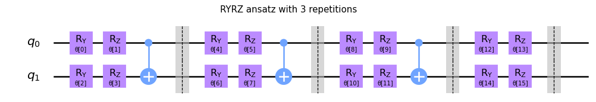
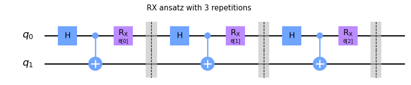
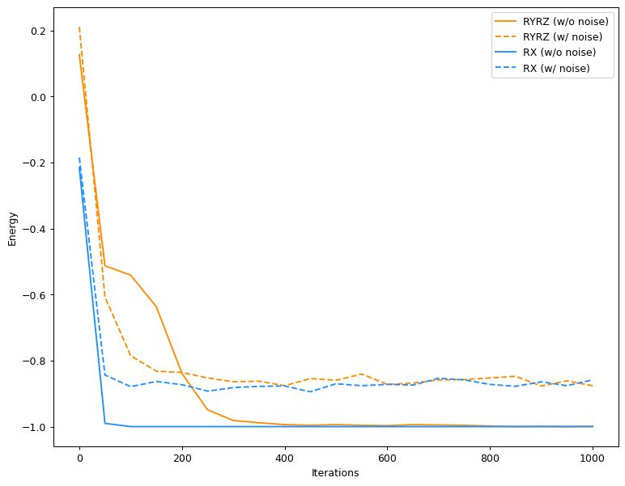

Lowest eigenvalue with Variational Quantum Eigensolver
Table of Contents
Introduction
Variational quantum eigensolver (VQE)1 is a hybrid quantum-classical algorithm that can be used on NISQ devices to find the ground states of various quantum mechanical systems, most notably used in quantum chemistry2 and nuclear physics3. Here we will see a demonstration of the variational quantum eigensolver with the Hamiltonian
\begin{align} H = \begin{bmatrix} 1 & 0 & 0 & 0\\ 0 & 0 & -1 & 0\\ 0 & -1 & 0 & 0\\ 0 & 0 & 0 & 1 \end{bmatrix}, \end{align}whose eigenvalues can be calculated easily on a classical computer:
import numpy as np
H = np.zeros(shape=(4, 4))
H[0, 0] = H[3, 3] = 1
H[1, 2] = H[2, 1] = -1
print("Hamiltonian:")
print(H)
print(f"Eigenvalues: {np.linalg.eigvals(H)}")
Hamiltonian: [[ 1. 0. 0. 0.] [ 0. 0. -1. 0.] [ 0. -1. 0. 0.] [ 0. 0. 0. 1.]] Eigenvalues: [ 1. -1. 1. 1.]
The minimum eigenvalue is \(-1\). While the eigenvalues for this Hamiltonian could be calculated easily on a classical computer, this is not generally true for Hamiltonians of interest in physics and chemistry. Hence the need for algorithms like VQE.
Algorithm
The VQE algorithm can be broken down in to the following steps:
- Design a quantum circuit, controlled by a set of parameters \({θ_i}\), and prepare the initial state \(|ψ^0〉\) with this circuit. This is known as the ansatz.
- Define the objective function \(f({θ_i^n}) = ⟨ψ({θ_i^n})|H|ψ({θ_i^n})⟩\), that is the expectation value of the Hamiltonian with respect the ansatz.
- Let \(n = 0\).
- Repeat until optimization is completed:
- Calculate \(f({θ_i^n})\) on the quantum computer.
- Feed \(f({θ_i^n})\) to a classical minimization algorithm, and allow it to determine \({θ_i^{n+1}}\).
Ansatz
There are two things that the user can choose in this algorithm: the initial state, and the classical minimization algorithm. Of this, it turns out, the initial state (ansatz) is the most important. The selection of a particular ansatz are usually determined by the choice of the hardware, and the features of the problem, such as the symmetries of the Hamiltonian. For computation on NISQ devices, the hardware is usually the dominating factor. We will consider two ansatzes for this demonstration. The first is parameterized by RY and RZ gates. This is a special case of the hardware efficient ansatz described in the paper by Kandala et al..
from vqe.vqe import RYRZAnsatz, RXAnsatz
import matplotlib.pyplot as plt
fig, ax = plt.subplots(figsize=(6, 4))
RYRZAnsatz(reps=3, barriers=True).draw("mpl", ax=ax)
fig.suptitle("RYRZ ansatz with 3 repetitions")
fig.savefig("img/ryrz_ansatz.png", dpi=90, bbox_inches="tight")
plt.close()

The second ansatz is parameterized by RX gates.
fig, ax = plt.subplots(figsize=(6, 4))
RXAnsatz(reps=3, barriers=True).draw("mpl", ax=ax)
fig.suptitle("RX ansatz with 3 repetitions")
fig.savefig("img/rx_ansatz.png", dpi=90, bbox_inches="tight")
plt.close()

These were the multi-layer versions of the ansatzes. In the single-layer versions the blocks just appear once.
Pauli Decomposition
One caveat of using VQE is that in general it is not easy to calculate the expectation value of the Hamiltonian. However if the Hamiltonian can be expressed as a linear sum of tensor products of the Pauli matrices \((I, X, Y, Z)\), then we can easily calculate the expectation value of the Hamiltonian. Tensor products of Pauli matrices, \(\{\{I, X, Y, Z\}^{⊗n}\}\), form an orthogonal basis for the vector space of \(2^n × 2^n\) Hermitian matrices. Thus any \(2^n × 2^n\) Hermitian matrix can be expressed as a linear sum of tensor products of Pauli matrices. For example, for n = 1, consider the Hermitian matrix
\begin{align} A = \begin{bmatrix} 2 & 1 \\ 1 & -3 \end{bmatrix}. \end{align}This matrix can be expressed as \(A = -\tfrac{1}{2}I + X + \tfrac{5}{2}Z\). In general for a \(2^n × 2^n\) Hermitian matrix A, the coefficients of expansion in the basis of tensor products of Pauli matrices is given by
\begin{align} a_{i_1 i_2 ⋯ i_n} = \frac{1}{2^n} \mathrm{tr}((σ_{i_1} ⊗ σ_{i_2} ⊗ ⋯ σ_{i_n})A), \end{align}
where \(σ_{i_j} ∈ \{I, X, Y, Z\}\). The factor of \(\frac{1}{2^n}\) is to normalize
the Pauli matrices. The function pauli_decomposition in
vqe/utils.py does this decomposition for any \(2^n × 2^n\) Hermitian
matrix. Here is the decomposition of our Hamiltonian \(H\):
from vqe.utils import pauli_decomposition pauli_decomposition(H)
defaultdict(int, {'II': 0.5, 'XX': -0.5, 'YY': -0.5, 'ZZ': 0.5})
We can express our Hamiltonian as \(H = \tfrac{1}{2}(II + ZZ - XX - YY)\). Thus
\(〈H〉 = \tfrac{1}{2}(〈II〉 + 〈ZZ〉 - 〈XX〉 - 〈YY〉)\), where \(〈O〉 =
〈ψ|O|ψ〉\) is the expectation value of the observable \(O\). Since the
expectation value of \(II\) is always \(1\), therefore this boils down to
calculating the expectation values of \(ZZ\), \(XX\), and \(YY\), and then doing
the weighted sum of all the four expectation values. Tensor products of Pauli
matrices have only two eigenvalues, \(±1\). The expectation value of a tensor
product of Pauli matrices can be calculated on a quantum computer as
\(\tfrac{(N_+ - N_-)}{N}\), where \(N_±\) is the number of measured eigenvectors
corresponding to the eigenvalue \(±1\) and \(N\) is the total number of
measurements4. The function energy in vqe/vqe.py computes the
expectation value of any Hamiltonian which has a Pauli decomposition with
respect to any given ansatz.
Optimization
Any classical optimization algorithm can be used in VQE, with varying degrees of
success. Gradient-free methods like COBYLA, Nelson-Mead, SPSA etc. are the
preferred methods for these problems since it will be difficult to calculate the
derivative of the objective function. For problems like VQE, SPSA or
Simultaneous Perturbation Stochastic Algorithm might be the most suitable, since
it scales well to large problems (unlike COBYLA), and accounts for noise which
is ubiquitous on a NISQ device. SPSA is implemented in vqe/optimizers.py.
Simulation
We will do these simulations with the qasm_simulator backend provided by
Qiskit, initially without noise. First we will demonstrate VQE with the single
layer RYRZ ansatz, and then with the single layer RX ansatz.
from vqe.vqe import energy
from vqe.optimizers import SPSA
# The expectation value of the Hamiltonian
def parameterized_energy(params, H, ansatz, **kwargs):
return energy(H, ansatz, params=params, **kwargs)
# Random number generator
seed = 42
rng = np.random.default_rng(seed)
# Optimizer
maxiter = 1000
save_steps = 50
a = 2 * np.pi * 0.1
c = 0.1
A = 0.0001
spsa = SPSA(a=a, c=c, A=A)
# VQE with RYRZ ansatz
reps = 1
thetas_yz = rng.uniform(0, 2 * np.pi, size=(4 * (reps + 1)))
ryrz_ansatz = RYRZAnsatz(reps=reps)
result_yz = spsa.minimize(
parameterized_energy,
thetas_yz,
maxiter=maxiter,
save_steps=save_steps,
seed=seed,
H=H,
ansatz=ryrz_ansatz,
)
print(f"Lowest eigenvalue is {result_yz['fun']:.4f}.")
Lowest eigenvalue is -0.9990.
# VQE with RX ansatz
reps = 1
thetas_x = rng.uniform(0, 2 * np.pi, size=reps)
rx_ansatz = RXAnsatz(reps=reps)
result_x = spsa.minimize(
parameterized_energy,
thetas_x,
maxiter=maxiter,
save_steps=save_steps,
seed=seed,
H=H,
ansatz=rx_ansatz,
)
print(f"Lowest eigenvalue is {result_x['fun']:.4f}.")
Lowest eigenvalue is -1.0000.
Both the ansatzes effectively give \(-1\) as the minimum eigenvalue when running
on the simulator without noise. Let us now add noise to the simulation. For this
we will real noise data from the ibmq_vigo device using the data stored in
Qiskit Terra.
from qiskit import Aer
from qiskit.test.mock import FakeVigo
from qiskit.providers.aer.noise import NoiseModel
# Vigo noise model
device_backend = FakeVigo()
coupling_map = device_backend.configuration().coupling_map
noise_model = NoiseModel.from_backend(device_backend)
basis_gates = noise_model.basis_gates
# BasicAer does not support noise, we need the simulator from Aer
backend = Aer.get_backend("qasm_simulator")
# Noisy VQE with RYRZ ansatz
result_yz_noisy = spsa.minimize(
parameterized_energy,
thetas_yz,
maxiter=maxiter,
save_steps=save_steps,
seed=seed,
H=H,
ansatz=ryrz_ansatz,
backend=backend,
noise_model=noise_model,
coupling_map=coupling_map,
basis_gates=basis_gates
)
print(f"Lowest eigenvalue is {result_yz_noisy['fun']:.4f}.")
Lowest eigenvalue is -0.8760.
# Noisy VQE with RX ansatz
result_x_noisy = spsa.minimize(
parameterized_energy,
thetas_x,
maxiter=maxiter,
save_steps=save_steps,
seed=seed,
H=H,
ansatz=rx_ansatz,
backend=backend,
noise_model=noise_model,
coupling_map=coupling_map,
basis_gates=basis_gates
)
print(f"Lowest eigenvalue is {result_x_noisy['fun']:.4f}.")
Lowest eigenvalue is -0.8584.
With noise added to the system we no longer get the exact lowest eigenvalue of the Hamiltonian. But we still come close to it.
Visualization
We can see the progress of the optimization, which might give us some insights into VQE.
iters = np.arange(0, maxiter + save_steps, save_steps)
fig, ax = plt.subplots(figsize=(10, 8))
ax.plot(iters, result_yz['log']['fevals'], color='darkorange', linestyle='solid', label='RYRZ (w/o noise)')
ax.plot(iters, result_yz_noisy['log']['fevals'], color='darkorange', linestyle='dashed', label='RYRZ (w/ noise)')
ax.plot(iters, result_x['log']['fevals'], color='dodgerblue', linestyle='solid', label='RX (w/o noise)')
ax.plot(iters, result_x_noisy['log']['fevals'], color='dodgerblue', linestyle='dashed', label='RX (w/ noise)')
ax.set_xlabel("Iterations")
ax.set_ylabel("Energy")
ax.legend()
fig.savefig("img/rx_log.png", bbox_inches="tight", dpi=90)
plt.close()

Few observations that we can immediately make from this figure:
- VQE converges pretty fast for the RX ansatz, both with and without noise. About 200 SPSA iterations seem to be enough, instead of the 1000 that we used.
- Surprisingly noisy RYRZ converges faster, albeit to a wrong value, than the noiseless version. This could be due to the probabilistic nature of SPSA. In general the RYRZ ansatz takes more time than the RX ansatz to converge. This shows the impact of the choice of the ansatz.
- The effect of the noise is fairly constant, more so for the RX ansatz, than the RYRZ ansatz. The noise pretty much just shifts the converged results by a constant amount. If we know that what the effect of the noise is going to be then we might be able to correct for it.
Conclusion
We demonstrated the VQE algorithm with a quantum simulator. We showed that it gives the lowest eigenvalue on a noiseless device. On a noisy device, it does not give the correct answer, but it goes quite close. Maybe further error correction procedures can help with that.
Further explorations would naturally involve trying out other ansatz, and other optimization methods. Automatic differentiation would greatly facilitate the use of gradient based optimizers for VQE problems. Though SPSA did an excellent job with this toy problem, it would be worthwhile to check if gradient based optimizers give superior performance. Towards that end one could investigate how to integrate existing automatic differentiation packages like JAX and Autograd with quantum computing packages like Qiskit. The most important exploration would be to try this on an actual quantum computer, with a more complicated Hamiltonian to demonstrate the quantum advantage that VQE provides.
The code for this is in the vqe folder. Please check that for details
regarding my implementation of the various parts of the VQE algorithm.
Footnotes:
Peruzzo, A., McClean, J., Shadbolt, P. et al., A variational eigenvalue solver on a photonic quantum processor. Nat Commun 5, 4213 (2014). https://doi.org/10.1038/ncomms5213
Kandala, A., Mezzacapo, A., Temme, K. et al., Hardware-efficient variational quantum eigensolver for small molecules and quantum magnets. Nature 549, 242–246 (2017). https://doi.org/10.1038/nature23879
Dumitrescu, E. F. et al. Cloud Quantum Computing of an Atomic Nucleus.” Physical Review Letters 120.21 (2018). https://arxiv.org/abs/1801.03897
For more details on making measurements with tensor products of Pauli operators check out this excellent answer by Davit Kachatryan and Pauli Measurements by Microsoft Quantum.